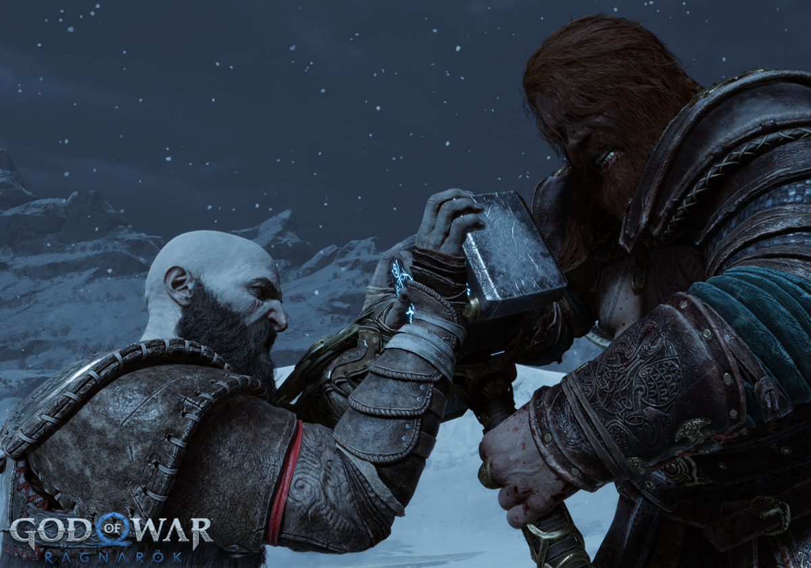

El Arte en el Desarrollo de Videojuegos
El arte es esencial en el desarrollo de videojuegos, definiendo su estilo visual y enriqueciendo la experiencia del jugador. Desde gráficos pixelados hasta impresionantes entornos tridimensionales, la evolución del arte se ha convertido en una poderosa forma de expresión.
Para los desarrolladores, el arte no es solo estética; es clave para lograr inmersión y contar historias. Equipos de artistas y programadores colaboran para crear mundos vibrantes y personajes memorables, donde el equilibrio entre estilo y jugabilidad es vital.
Con el tiempo, los desarrolladores han tomado un papel protagónico en la dirección artística, comprendiendo que un diseño visual atractivo puede marcar la diferencia entre el éxito y el fracaso de un juego. Cada detalle se cuida al máximo, creando una atmósfera cautivadora que atrapa a los jugadores desde el primer instante.
|  | |
| Estilo de arte clásico | Estilo de arte moderno |
El Arte en los Videojuegos: Pasado y Presente
El arte en los videojuegos ha recorrido un largo camino desde sus inicios. En las primeras décadas, los recursos gráficos eran limitados, y los desarrolladores tenían que ser creativos con píxeles y colores básicos. Títulos icónicos como Pac-Man o Space Invaders se destacaron por su simplicidad, pero aún así lograron capturar la imaginación de millones.
Hoy en día, los avances tecnológicos permiten gráficos en alta definición, texturas realistas y animaciones impresionantes. Los juegos modernos, como The Last of Us o Red Dead Redemption 2, destacan no solo por sus gráficos espectaculares, sino también por su capacidad de contar historias visuales profundas.

|

|
El contraste entre el arte antiguo y el nuevo no solo muestra la evolución tecnológica, sino también la forma en que los artistas y desarrolladores han aprendido a utilizar el arte como una herramienta narrativa poderosa, capaz de evocar emociones y transportar a los jugadores a mundos virtuales.